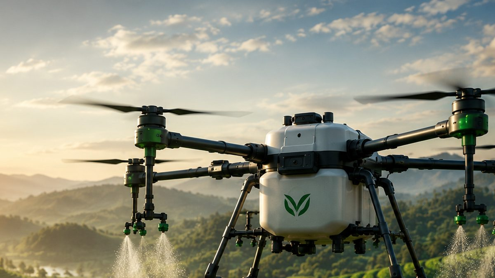

Kemarau Panjang El Niño: Cara Merawat Drone Sprayer agar Tetap Prima
Suhu panas saat kemarau bisa memperpendek umur baterai dan menyumbat nosel. Simak cara merawat drone sprayer agar tetap awet.
El Niño's Long Dry Season: How to Keep Your Spray Drone in Top Shape
Hot dry-season temperatures can shorten battery life and clog nozzles. Here is how to look after your spray drone so it lasts.
厄尔尼诺带来漫长旱季：如何让植保无人机保持最佳状态
旱季高温会缩短电池寿命并堵塞喷头。了解如何保养植保无人机，延长使用寿命。

BMKG menyebut musim kemarau 2026 lebih kering dan lebih panjang dari biasanya akibat El Niño. Puncaknya terjadi pada Agustus–September, dan El Niño diperkirakan bertahan hingga awal 2027.
Cuaca panas seperti ini tidak hanya berdampak pada tanaman, tetapi juga pada drone sprayer. Baterai, pompa, dan nosel bekerja di suhu tinggi dan lingkungan yang berdebu.
Merawat Baterai
Dinginkan Dulu Sebelum Diisi
Jangan langsung mengisi baterai setelah terbang karena suhunya masih tinggi. Biarkan suhu baterai turun ke suhu ruang sebelum diisi agar sel baterai tidak cepat rusak.
Simpan di Tempat Sejuk
Hindari meninggalkan baterai di bawah terik matahari atau di dalam mobil yang panas. Simpan di tempat kering dan sejuk, idealnya sekitar 22–28 °C.
Jangan Simpan dalam Kondisi Penuh atau Kosong
Jika baterai tidak akan dipakai lebih dari sebulan, hindari menyimpannya dalam kondisi terisi 100% atau benar-benar kosong.
Gunakan Charger Resmi
Charger yang tidak sesuai spesifikasi berisiko merusak sel dan sistem manajemen baterai.
Merawat Sistem Semprot
Bilas Setelah Setiap Pemakaian
Isi tangki dengan air bersih dan jalankan pompa beberapa menit untuk membilas sisa pestisida di selang dan nosel. Di cuaca panas, sisa larutan lebih cepat mengering dan mengendap.
Periksa Nosel dan Saringan
Bersihkan saringan dan periksa pola semprotan nosel secara berkala. Nosel yang aus atau tersumbat membuat semprotan tidak merata.
Bersihkan Badan Drone
Bersihkan debu dan residu kimia pada lengan, motor, dan sensor setelah bekerja. Ikuti petunjuk pabrikan tentang bagian mana yang boleh dicuci dengan air.
Pilih Waktu Semprot yang Tepat
Saat suhu tinggi, larutan pestisida mudah menguap dan butiran semprotan yang halus mudah terbawa udara sebelum menempel di daun. Karena itu, penyemprotan sebaiknya dilakukan pagi hari sekitar pukul 06.00–09.00 atau sore hari, dan hindari siang hari yang terik.
Beberapa drone, seperti EAVision EA-30X dan EA-30XP, dilengkapi lampu navigasi malam sehingga bisa bekerja setelah matahari terbenam. Baca juga ulasan lengkapnya.
Kesimpulan
Kemarau panjang menuntut perawatan drone yang lebih disiplin. Baterai yang dirawat dengan baik lebih awet, dan sistem semprot yang bersih membuat hasil penyemprotan tetap merata.
Butuh baterai, suku cadang, atau servis drone? PT Diesel Agri Sukses Sejahtera adalah distributor resmi drone EAVision dan VectorAgr.
Butuh saran? Hubungi kami.
Sumber: BMKG, Kompas TV, Jakarta School of Photography, Doran Gadget, Jalatani, Politeknik Pertanian Negeri Kupang.
BMKG says the 2026 dry season is drier and longer than usual because of El Niño. It peaked in August–September, and El Niño is expected to last until early 2027.
Hot weather like this affects not only crops but also spray drones. Batteries, pumps, and nozzles all work in high temperatures and dusty conditions.
Battery Care
Let It Cool Before Charging
Do not charge a battery straight after a flight while it is still hot. Let it cool to room temperature first so the cells do not degrade early.
Store in a Cool Place
Never leave batteries in direct sun or inside a hot car. Store them somewhere dry and cool, ideally around 22–28 °C.
Do Not Store Fully Charged or Fully Empty
If a battery will not be used for more than a month, avoid storing it at 100% or completely empty.
Use the Official Charger
A charger that does not match the specifications can damage the cells and the battery management system.
Spray System Care
Rinse After Every Use
Fill the tank with clean water and run the pump for a few minutes to flush pesticide residue from the hoses and nozzles. In hot weather, leftover solution dries and settles faster.
Check Nozzles and Filters
Clean the filters and check the nozzle spray pattern regularly. Worn or clogged nozzles cause uneven spraying.
Clean the Drone Body
Clean dust and chemical residue from the arms, motors, and sensors after each job. Follow the manufacturer's guidance on which parts may be washed with water.
Choose the Right Time to Spray
In high temperatures, pesticide solution evaporates quickly and fine droplets drift away before they land on the leaves. Spraying is best done in the morning, around 06:00–09:00, or in the late afternoon. Avoid the midday heat.
Some drones, such as the EAVision EA-30X and EA-30XP, have night navigation lights so they can work after sunset. Read the full review.
Conclusion
A long dry season calls for more disciplined drone care. Well-maintained batteries last longer, and a clean spray system keeps application even.
Need batteries, spare parts, or drone servicing? PT Diesel Agri Sukses Sejahtera is the authorised distributor of EAVision and VectorAgr drones.
Need advice? Contact us.
Sources: BMKG, Kompas TV, Jakarta School of Photography, Doran Gadget, Jalatani, Politeknik Pertanian Negeri Kupang.
印尼气象局（BMKG）表示，受厄尔尼诺影响，2026年旱季比往年更干燥、更漫长。旱季高峰出现在8月至9月，厄尔尼诺预计将持续到2027年初。
这样的高温天气不仅影响作物，也影响植保无人机。电池、水泵和喷头都在高温和多尘的环境中工作。
电池保养
先冷却再充电
飞行结束后电池温度仍然很高，不要立即充电。请等电池降至室温后再充电，以免电芯过早老化。
存放在阴凉处
切勿将电池放在烈日下或高温的车内。请存放在干燥阴凉处，理想温度约为22–28 °C。
不要满电或空电存放
如果电池超过一个月不使用，请避免以100%满电或完全放空的状态存放。
使用原厂充电器
不符合规格的充电器可能损坏电芯和电池管理系统。
喷洒系统保养
每次作业后冲洗
在药箱中加入清水，运行水泵几分钟，冲洗管路和喷头中残留的农药。高温天气下，残液干燥和沉淀得更快。
检查喷头和滤网
定期清洁滤网并检查喷头的雾化形态。磨损或堵塞的喷头会导致喷洒不均匀。
清洁机身
作业后清除机臂、电机和传感器上的灰尘和药剂残留。哪些部位可以用水清洗，请遵循厂家说明。
选择合适的喷洒时间
气温高时，药液容易蒸发，细小雾滴在落到叶面前就会飘散。因此，建议在早上6:00–9:00或傍晚喷洒，避开正午的烈日。
部分无人机，例如EAVision EA-30X和EA-30XP，配备夜航灯，日落后也能作业。另请阅读详细介绍。
结论
漫长的旱季需要更严格的无人机保养。电池保养得当寿命更长，喷洒系统清洁则能保证喷洒均匀。
需要电池、配件或无人机维修？ PT Diesel Agri Sukses Sejahtera 是EAVision和VectorAgr无人机的授权经销商。
需要建议？联系我们。
资料来源： BMKG, Kompas TV, Jakarta School of Photography, Doran Gadget, Jalatani, Politeknik Pertanian Negeri Kupang.